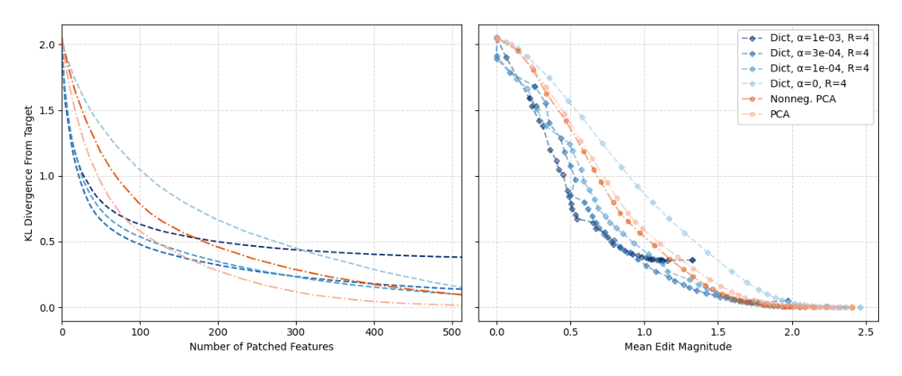

IOI patching efficiency: dictionary features vs. PCA

How to read these curves
Both panels share the same y-axis: KL divergence between the model's output when its activations are edited ("patched") and its output on a genuine counterfactual sentence — lower means the edit reproduced the counterfactual behavior more faithfully, zero would mean a perfect match. Each curve is one activation decomposition (four sparse dictionaries at different sparsity coefficients α, plus PCA and a non-negative variant of PCA), and each point on a curve corresponds to patching some number of that decomposition's directions, chosen in order of individually-estimated causal importance via Automated Circuit Discovery (ACDC)'s ranking procedure — not an arbitrary or random order. The left panel plots KL divergence against how many directions were patched; the right panel plots the same KL divergence against the total magnitude of the edit those directions required. A curve that drops toward zero quickly, using few features or small magnitude, localizes the behavior more tightly than one that drops slowly or plateaus above zero. A plateau above zero reflects a decomposition whose reconstructions are simply less accurate, not a fundamentally different task.
What the curves show
All curves start near a KL divergence of about 2.0 with nothing patched. In the left panel, the sparse-dictionary curves fall faster than both PCA variants over most of the range shown, reaching a low KL divergence with substantially fewer patched features; the exception is the dictionary trained with the largest sparsity coefficient (α=1e-03), whose curve flattens out around 0.4 and never approaches zero, since heavier sparsity trades away reconstruction accuracy. The non-sparse dictionary (α=0) falls more slowly than the sparsity-penalized dictionaries, showing that sparsity itself, not just being a learned dictionary, drives the improved localization. The right panel tells a similar story in terms of edit size: the sparse-dictionary curves sit below and to the left of the PCA curves for most of the range, meaning a given reduction in KL divergence is achieved with a smaller total edit magnitude — the paper describes this as an improved Pareto frontier of edit magnitude versus thoroughness (sparse-autoencoders, §"4.2 PRECISE LOCALISATION OF IOI DICTIONARY FEATURES", p. 6).
What this establishes
The experiment uses the Indirect Object Identification (IOI) task, a previously-characterized behavior, specifically because ground truth about what the model is doing is already established, letting the comparison isolate how precisely each decomposition's directions align with the mechanism rather than whether it exists. Because the Dictionary features were trained with no reference to IOI or any other downstream task, their ability to localize this behavior with fewer, smaller edits than Principal Component Analysis (PCA) via Dictionary-feature patching procedure is offered as evidence that sparsity recovers directions with genuine causal structure, not directions fit to this task.